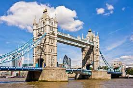
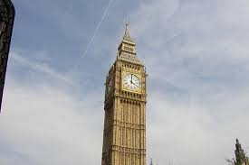

Tower Bridge
Big Ben

London Eye
|  Tower Bridge |
 Big Ben |
London Eye |
Tower Bridge is a Grade I listed combined bascule and suspension bridge in London, built between 1886 and 1894, designed by Horace Jones and engineered by John Wolfe Barry with the help of Henry Marc Brunel. It crosses the River Thames close to the Tower of London and is one of five London bridges owned and maintained by the Bridge House Estates, a charitable trust founded in 1282. The bridge was constructed to give better access to the East End of London, which had expanded its commercial potential in the 19th century.
Big Ben is the nickname for the Great Bell of the Great Clock of Westminster, at the north end of the Palace of Westminster in London, England, and the name is frequently extended to refer also to the clock and the clock tower. The official name of the tower in which Big Ben is located was originally the Clock Tower, but it was renamed Elizabeth Tower in 2012 to mark the Diamond Jubilee of Elizabeth
The London Eye, or the Millennium Wheel, is a cantilevered observation wheel on the South Bank of the River Thames in London. It is Europe's tallest cantilevered observation wheel, and is the most popular paid tourist attraction in the United Kingdom with over 3 million visitors annually. It has made many appearances in popular culture.